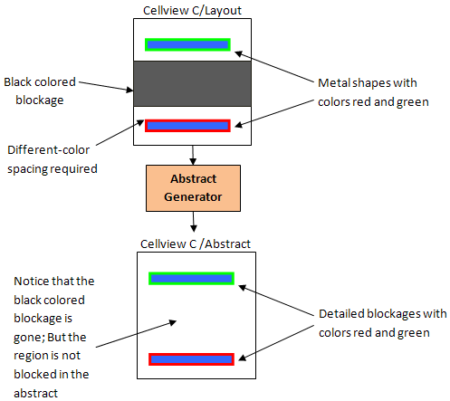

Supported Blockage Colors in Multi-Patterning Technology
Apart from the ‘multi’ and individual shape colors, Abstract Generator supports the following blockage colors.
- Gray: Pins and blockages corresponding to isolated shapes in the layout editor are assigned the gray color. Such pins can be colored, which means that their color is driven by their environment. Gray pins can be connected using any colored wire. During the Pins and Extract steps, if any gray metal shapes are coincident with any colored shape on the same layer, then the gray shape is dropped.
- Black: Blockages defined in the layout editor to keep routing out of a particular region are assigned the black color. Other colored shapes are kept at different-color spacing away from a black blockage.
During abstract generation, the region corresponding to a black blockage is kept clear of any shapes.

Related Topics
Color Representation for Blockages
Return to top